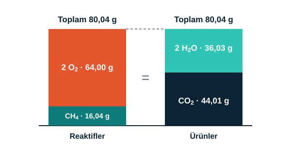

Bölüm 6 · Hesaplama
Kütle korunur, denklem dengelenir

Antoine Lavoisier, kapalı bir sistemde tepkimeye giren maddelerin toplam kütlesinin, oluşan ürünlerin toplam kütlesine eşit olduğunu göstermiştir. Buna kütlenin korunumu denir.
Metanın yanmasında: 16,04 g CH4 + 2 × 32,00 g O2 = 80,04 g. Ürünler: 44,01 g CO2 + 2 × 18,015 g H2O = 80,04 g. İki taraf da eşittir.
Atom sayılarını kontrol edin
| Atom | Reaktiflerde | Ürünlerde | Durum |
|---|---|---|---|
| C | 1 | 1 | Eşit |
| H | 4 | 4 (2 × 2) | Eşit |
| O | 4 (2 × 2) | 4 (2 + 2 × 1) | Eşit |
Denklem nasıl dengelenir?
Örnek olarak CH4 + O2 → CO2 + H2O denklemini ele alalım. Bu denklem dengesizdir. Şu adımlarla dengeleyebilirsiniz:
- Her iki taraftaki atom sayılarını yazın.
- Önce C ve H'yi dengeleyin. Tek atomlu olanları sona bırakın.
- Oksijeni en son dengeleyin: 2 O2 ve 2 H2O.
- Sonuç: CH4 + 2O2 → CO2 + 2H2O. Atom sayılarını tekrar kontrol edin.
Dikkat: Katsayı, tepkimeye giren ya da çıkan molekül sayısıdır. Formüldeki alt indisi değiştirmek molekülün kendisini değiştirir; bu yüzden denkleştirirken yalnızca katsayılara dokunulur.
Örnek hesap: 8 g CH4 yandığında kaç g CO2 oluşur?
n(CH4) = 8 ÷ 16,04 ≈ 0,499 mol → denkleme göre n(CO2) = 0,499 mol → m(CO2) = 0,499 × 44,01 ≈ 21,95 g
Kontrol: 8 + 31,92 (O2) = 39,92 g; 21,95 + 17,97 (H2O) = 39,92 g ✓
n(CH4) = 8 ÷ 16,04 ≈ 0,499 mol → denkleme göre n(CO2) = 0,499 mol → m(CO2) = 0,499 × 44,01 ≈ 21,95 g
Kontrol: 8 + 31,92 (O2) = 39,92 g; 21,95 + 17,97 (H2O) = 39,92 g ✓
Kendin dene: Propan yanmasını dengeleyin: C3H8 + O2 → CO2 + H2O
Cevap: C3H8 + 5O2 → 3CO2 + 4H2O
Cevap: C3H8 + 5O2 → 3CO2 + 4H2O